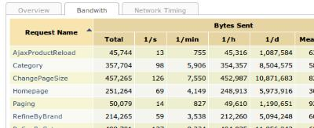
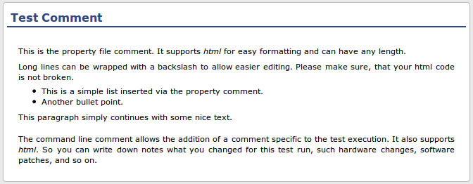
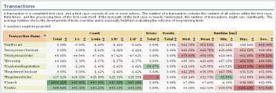
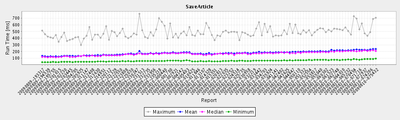
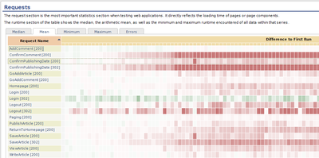

XLT 3.3.5
This section lists and documents all important fixes in Xceptance LoadTest 3.3.5. Registered customers can access an overview of changes and the latest roadmap at the XLT Information Center.
Features and Improvements
Add waitForElement() method (#597)
It is quite common in today’s web applications that a page is not just loaded by a single request, but the page is assembled from the responses of multiple (AJAX) requests. Furthermore, the page might be constantly updated by JavaScript jobs, scheduled via window.setTimeout() and window.setInterval(). From the framework’s perspective it is hard to tell whether a page is loaded completely now, or at least “complete enough” to continue with the test case. A better way is to leave that decision to the test case designer, who has to specify when to go on with the test case. Formerly, the framework could only be instructed to wait until all JS jobs are finished or a certain timeout period had exceeded, but this was not flexible enough and could lead to longer waiting times, and hence, longer test case execution times. Now the test case designer can also instruct the framework to wait for a certain HTML element to appear on the page before going on, no matter whether there are still JS background jobs running or pending.
The solution is twofold. First, we need a method which waits until that special element (addressed by an XPath expression) appears on the page:
public static List<HtmlElement> waitForHtmlElements(HtmlPage page, String xpath, long timeout);
As its result, the method returns all elements that were located by the specified XPath. In order to not wait forever in case of an error, a maximum waiting time has to be given, after which an exception will be thrown. This method is now part of HtmlPageUtils.
Second, we have to deal with the fact that the existing loadPageXYZ() methods cancel any already scheduled, but not yet running JS job before returning. This means that the above method alone was not enough, as the JS code that creates the element might not get executed at all. Formerly, one could only control, for how long the loadPageXYZ() methods will wait for the completion of JS jobs (also including periodic jobs) before canceling these jobs, but not whether these jobs should be canceled at all. In order to support this new behavior, the allowed value range of the timeout parameter was extended:
loadPageByClick(button)[already available] -> waits at most XX s (XX as configured indefault.properties) for running JS jobs to finish and after that time cancels any pending jobsloadPageByClick(button, 0)[already available] -> as above, but with XX := 0 sloadPageByClick(button, 10000)[already available] -> as above, but with XX := 10 sloadPageByClick(button, -1)[new] -> returns immediately without waiting for jobs to finish or canceling pending jobs
In combination, a typical code snippet might look like this:
protected void execute() throws Exception
{
// get and click the button
HtmlPage previousPage = getPreviousAction().getHtmlPage();
HtmlElement button = HtmlPageUtils.findHtmlElements(previousPage, "id('foo')");
loadPageByClick(button, -1);
// wait 20 secs for the result to appear on the page
HtmlPage currentPage = getHtmlPage();
HtmlPageUtils.waitForHtmlElements(currentPage, "id('bar')/div", 20000);
}
New method AbstractHtmlPageAction.setHtmlPage() introduced (#1005)
Formerly, the resulting page of an action was only implicitly set – by one of the loadPage...() methods. However, there are situations when one would like to set a different page, for example if an action implicitly opens a pop-up page, but not the pop-up page, but the main page should be the result of the action. Now there is a new method AbstractHtmlPageAction#setHtmlPage(), which can be used to override the resulting page of an action.
Bug Fixes
Wrong page returned from HtmlSelect#setSelectedAttribute() (#912)
When selecting an option from a select box on a certain page (via HtmlSelect#setSelectedAttribute()), the resulting page was always the original page, which is wrong in case some JavaScript code changed the document location, opened a pop-up window, etc. Fixed now.
NumberFormatException during report creation (#977)
When logging events, the name of the test case which produced the event has to be provided. As the test case name the current virtual user’s name is expected (as returned from Session.getCurrent().getUserName()). It is important that exactly this name is specified as otherwise the event cannot be associated with a test case in the test report. If a different name is specified, for example the test case’s fully-qualified class name, we will get a new transaction with that name in the report, for which events but no run time values exist. This caused a NumberFormatException during report generation. Fixed now.
In order to avoid giving an event a wrong test case name, the method DataManager#logEvent(String eventName, String testCaseName, String message) has been deprecated in favor of the new method DataManager#logEvent(String eventName, String message), which implicitly sets the correct test case name.
Wrong per-X values in test report when using sequential mode (#1004)
A load test can be run in sequential mode (mastercontroller ... -sequential). In this mode, all configured test cases are not run in parallel, but sequentially. A separate results directory will be created for each test case. If the master controller was configured to automatically create a load test report from the results (mastercontroller ... -sequential -report), all per-X values were wrong for all reports except the first.
The reason for this misbehavior was that the start time of the respective test was not newly determined when calculating the test report for each test case, but the start time of the first test was taken for all reports. This way, the test duration got longer with each test case, messing up all values that rely on the duration.
Note that this issue did not occur if the test reports were created afterwards, separately for each test case. This is also the way to go to correct wrong reports: simply recreate them.
Time to First/Last is extremely large in case of socket timeouts (#1073)
In the test report, we can see the network timing statistics for each type of request. However, the minimum and maximum values for Time-to-first-bytes and Time-to-last-bytes were sometimes implausible (either negative or extremely large), especially in case of socket read time-outs. Fixed now.
Trend report refers to wrong charts directory for custom timers (#1127)
The charts directory of trend reports was incorrect for custom timers. Charts were generated to the ‘customTimers’ directory, but they should go to the ‘custom’ directory. Fixed now.
XLT 3.3.4
This section lists and documents all important fixes in Xceptance LoadTest 3.3.4. Registered customers can access an overview of changes and the latest roadmap at the XLT Information Center.
Bug Fixes
StackOverflowError when handling onblur events (#940)
Under certain circumstances, the onblur handler of an HTML element might be called recursively, causing a StackOverflowError. Fixed now.
XLT 3.3.3
This section lists and documents all new features, improvements, and important fixes in Xceptance LoadTest 3.3.3. Registered customers can access an overview of changes and the latest roadmap at the XLT Information Center.
Features
Simple front-end application to manage AWS EC2 instances (#695)
The Amazon Elastic Compute Cloud service is a perfect fit for on-demand load testing. XLT agents can easily be run from EC2 instances. Up to now, configuring the master controller to use the new agents was a tedious job, especially if many agent machines were involved, as it includes to manually get the current IP address of each machine and create a corresponding line in the mastercontroller’s configuration. Now there is a command-line tool that simplifies the handling of Amazon EC2 instances in general. It provides the following functionality:
- start new instances (with only a few options)
- stop running instances
- list running instances (and print a corresponding agent controller configuration ready to be pasted into
mastercontroller.properties)
Note that this tool is not intended to replace the AWS console or similar tools.
Before you can use the tool, you have to configure it appropriately. There is a new configuration file: <xlt>/config/ec2_admin.properties. The most important settings are your AWS credentials. These are needed to authorize any AWS operation, which is executed on your behalf.
## Your AWS credentials.
aws.accessKey = <enter your access key>
aws.secretKey = <enter your secret key>
## The protocol to use (defaults to https).
#aws.protocol = https
## HTTP proxy settings.
#aws.proxy.host = localhost
#aws.proxy.port = 8888
#aws.proxy.userName =
#aws.proxy.password =
You may also configure a proxy if one is required to be used in your environment.
To run the tool, call one of the two scripts <xlt>/bin/ec2_admin.sh or <xlt>\bin\ec2_admin.cmd depending on your OS choice. The tool will guide you through the available operations via a menu-based UI. Keep in mind, that you can easily run XLT in a heterogeneous environment and control Linux based agents from a Microsoft Windows environment.
Note that when creating AWS instances from AMIs you will see your own AMIs to choose from, but you may also see public AMIs provided by Xceptance. These AMIs are pre-packaged systems, which are optimized for load testing and have XLT already installed. Using one of these AMIs may save you the work to create and maintain your own AMIs, but may also impose additional costs. See the AMI’s description for more details.
When using the new EC2 management UI for XLT, please be aware of the fact, that XLT does not distinguish between instances it started and instance you have started manually when using the stop command. For fine-grained control, we recommend the AWS Management Console.
Improvements
Extensive network statistics (#448)
Now the load test report features extensive network statistics on the Requests page displaying data for bandwidth utilization and socket timing information.
 The new network statistics section
{kind=link}
The bandwidth tab displays information about the use incoming and outgoing bandwidth per request. XLT measures on socket level and therefore the real transfered data out and in of the application is measured. XLT does not analyze or modify that data when taking the measurements. Bytes Sent comprises all data that is sent out of the application including overhead such as http(s) headers and SSL protocol data. Bytes Received includes all received data and the connected overhead. There is no measurement difference between sent and received data.
Network Timing reports all low level network timing data that have been measured on socket level. Each measurement point contains information about minimum and maximum times occurred as well as the mean of all gathered data.
- Connect Time: Time needed to establish a connection to the other system. Please note when using keep-alive semantics during testing, the connect time will mainly be 0 except for the first request of a transaction.
- Send Time: Time required to send the request to the other system. Depending on the payload and the network speed, this data is often zero or very small.
- Server Busy Time: This indicated the time waiting after sending the last bytes till the first bytes are received.
- Receive Time: The time spent receiving data. Measured from the first bytes received till the last bytes received.
- Time to First Bytes: Total time from the connection start till the first bytes are received. Includes Connect, Send, Server Busy, and Receive Time.
- Time to Last Bytes: Total time from the connection start till the last bytes are received. This is the time needed to connect, send, and receive data. Often this time is called network runtime. The request runtime in comparison contains the network runtime and the application time needed to process header and protocol information and transfer the data from socket level to the application level.
Consistent host names (#589)
A load agent uses its host name/IP address to qualify the name under which resource usage values are stored. The agent used to determine its local IP address itself. However, the result is not necessarily the same address as the one configured at the master controller, in case:
- the machine has more than one address, or
- the machine’s externally visible address is different than the internal one (NAT).
This can be confusing. Now the master controller passes the host name to the agent, and the agents always use that name/address when writing resource usage data. So all host names in the test report should be consistent with the master controller’s configuration now.
API to access agent information (#669)
Sometimes it is required to let an agent know what its name is and how many other agents take part in a load test. This information is especially useful when managing agent-specific resources, such as test data, which is exclusive to a certain agent. Now the Session class provides additional methods to access agent information:
Session.getAgentID()- the name of the current agent, as configured inconfig/mastercontroller.propertiesSession.getTotalAgentCount()- the total count of agents participating in the load testSession.getAgentNumber()- the number (or index) of the current agent (ranges from 0 to total agent count – 1)
You can use these values to access different test data files for and from your test cases or to partition a test data set into agent-specific chunks.
Relaxed cookie implementation to be compatible with browsers (#701)
Internet browsers, such as Internet Explorer or Firefox, accept cookies even if the path attribute specified in the cookie does not match the request. XLT rejects such cookies by default (as mandated by the HTTP specification), however, it can be re-configured now to behave exactly like the real browsers if needed. Now there is a new property com.xceptance.xlt.http.acceptCookiesWithInvalidPath in file default.properties, which controls whether cookies with invalid paths are accepted (true) or rejected (false). The property value defaults to false.
Credentials for HTTP authentication configurable (#757)
If the target server requires HTTP user authentication, the necessary credentials could only be set programmatically. Similar to the proxy authentication, you can use these new properties from the file config/default.properties now:
com.xceptance.xlt.auth.userName = <your_name>
com.xceptance.xlt.auth.password = <your_password>
#com.xceptance.xlt.auth.domain = <your_domain>
The domain setting is necessary for the NTLM authentication scheme only.
Note that these settings are global settings and will be used for all servers that require authentication. If you need different credentials for different servers, you still have to set them programmatically.
XLT 3.3.2
This section lists and documents all new features, improvements, and important fixes in Xceptance LoadTest 3.3.2. Registered customers can access an overview of changes and the latest roadmap at the XLT Information Center.
Improvements
Script Recorder compatible with Firefox 3.6 (#657)
Now the XLT script recorder is also compatible with Firefox 3.6.x.
Alternative loadPage() method for light-weight mode (#666)
The class AbstractHtmlPageAction already supports a variant of the loadPage(URL) method, which gives finer control how a request is actually executed:
protected void loadPage(final URL url, final List<NameValuePair> requestParameters, final HttpMethod method)
Via this method, the test case designer can choose the HTTP method to be used and pass additional request/form parameters. Now the same functionality is available for AbstractLightWeightPageAction as well.
XLT 3.3.1
Features
This section lists and documents all new features and additions to Xceptance LoadTest 3.3.1. Registered customers can access an overview of changes and the latest roadmap at the XLT Information Center.
Commenting tests and test executions (#105)
Testing is documenting, therefore XLT delivers a new feature that permits to add custom comments to the project and to the test execution. This improves the documentation quality and helps to make load testing more efficient.
 Some example text demonstrating the comment feature
Project comments are comments that have been added to the property files by using the new property com.xceptance.xlt.loadtests.comment. Comments can stretch across multiple lines in the property files, when the line break is escaped with a backslash (\). This line break will not cause a line break in the test report.
com.xceptance.xlt.loadtests.comment = This configuration tests the reaction on heavily changing thinktimes. \
Therefore the user count is extremely high to accommodate that.
Besides the comment property, a comment can be entered during test execution. On the command line, the master controller supports the new option -comment. The command line comment will be added to the test property file automatically to be available for a later report creation or re-creation. When running the master controller in interactive mode, you will be asked whether or not you want to add a comment to the last test execution.
./mastercontroller.sh -auto -comment "Using two additional web servers for this test."
The comment feature supports HTML to give you the ability to express test comments in a more structured way.
com.xceptance.xlt.loadtests.comment = This configuration tests the reaction on heavily changing <em>thinktimes</em>.<br/> \
Therefore the user count is <span style="color: Red;">extremely</span> high to accommodate that.
All comments will be placed without sanitation into the report. Therefore broken HTML code can break the report. If this happens, the comment HTML can be fixed by editing the property files and re-creating the report. The command line comment was automatically appended to the test property file used, so any mistake made can also be easily fixed later on.
If you would like to apply several different comments, such as a comment in the project property file and one or more additional comments in your test property file, you can add numbers to the comments. The comments will be included in their natural order. This means com.xceptance.xlt.loadtests.comment comes first, after that all numbered comments, such as ...comment.1 or ...comment.8. The comment from the command line will be placed at the end.
com.xceptance.xlt.loadtests.comment.1 = This is a comment.
com.xceptance.xlt.loadtests.comment.2 = This is another comment.
com.xceptance.xlt.loadtests.comment.9 = Here comes another one, completely out of order, but valid.
Improvements
Support a weight factor for load machines (#634)
By default, the configured load is distributed equally across all agent machines. If some of the agent machines are slower than the others, the load tester has to manually assign the number of users to agent machines to achieve an equal load level on each machine. When the total number of users changes often, this approach is uncomfortable and error-prone. Now a “weight” factor can be defined once for each participating agent machine and that weight is taken into consideration when automatically distributing the load across machines.
Now the master controller’s configuration looks like this:
com.xceptance.xlt.mastercontroller.agentcontrollers.ac1.url = https://agentmachine1:8500
com.xceptance.xlt.mastercontroller.agentcontrollers.ac1.weight = 5
com.xceptance.xlt.mastercontroller.agentcontrollers.ac2.url = https://agentmachine2:8500
com.xceptance.xlt.mastercontroller.agentcontrollers.ac2.weight = 20
In this case, agentmachine2 gets four times the load of agentmachine1.
Improved and streamlined WebDriver support (#626)
WebDriver is finally merging with Selenium. Therefore we decided to further improve the WebDriver support. Now XLT does not only support the main API and its principles, it is also compatible with the HtmlUnitDriver. Therefore it can be used as a drop-in replacement. Additionally the streamlined API guarantees compatibility with browser drivers, such as the FirefoxDriver or the ChromeDriver.
The principles how to use the WebDriver and how to inject the needed data to have a corresponding action concept in place have changed.
The XltDriver has to be created like a normal driver now: new XltDriver(). The previously available method setActionName(String) was dropped because it made it impossible to replace the XltDriver with any other driver. Please use this XLT-API method Session.getCurrent().setWebDriverActionName(String) instead. This method will only have an effect for XltDriver-based test cases. For all other drivers as well as the action-based test cases, it will not be active. Any set data will be ignored.
Previous XLT WebDriver support
// get web driver
final XltDriver driver = getDriver();
// turn off Javascript because we want to run a resource-friendly load test
driver.getWebClient().setJavaScriptEnabled(false);
// start page
driver.setActionName("Homepage");
driver.get(blogUrl);
New XLT WebDriver support
// get web driver
final XltDriver driver = new XltDriver();
// turn off Javascript because we want to run a resource-friendly load test
driver.setJavascriptEnabled(false);
// start page
Session.getCurrent().setWebDriverActionName("Homepage");
driver.get(blogUrl);
Make sure you take a look at the provided test cases in the
sample/testsuite-pebbledirectory. They show how to interact with the XltDriver. Basically now it is no difference anymore whether you work with the drivers provided by the WebDriver project or the XltDriver.
More material about WebDriver and especially documentation how to work with WebDriver, can be found in the official documentation under Selenium 2.0 and WebDriver.
Pool Threads Renamed (#619)
XLT maintains a pool of threads, which are responsible for downloading static content in parallel. The naming of these threads was rather generic, as can be seen here:
[2009/11/15-00:17:36,904] ERROR [pool-8289-thread-2] runtime - Failed to load static content from: http://www.mysystem.de/images/sky.gif
These names make it hard to associate the pool threads with a certain virtual user, especially during load tests with multiple virtual users. Now the thread name contains the virtual user’s ID:
[2009/11/15-00:17:36,904] ERROR [TUpload-0-pool-2] runtime - Failed to load static content from: http://www.mysystem.de/images/sky.gif
Error percentage in master controller’s output (#592)
To inform the user about the stability of the current test run the master controller’s output has been extended to display not only the total number of errors, but also the error rate in percent.
Automatic status update in interactive mode (#580)
When running the master controller in auto mode the agent status is printed to the screen continuously. The same behavior has been implemented for the interactive mode now, so there is no need any longer to refresh the status manually.
Changed user behavior during shutdown period (#572)
Previously, XLT stopped measurements when the shutdown period started, but kept the full load until the end of the shutdown period was reached. Now with the begin of the shutdown period all measurements are stopped, but no new test case executions are triggered. This makes the load fade out during the shutdown period. At the end of the shutdown period all still running tests are forced to stop to ensure that the load test ends in time.
In case the shutdown period is not specified or has a zero length, all test executions started before the measurement period ended are completed and no new transactions will be started. No test is forced to stop.
Enable HtmlUnit’s JavaScript debugger (#565)
HtmlUnit ships with a simple JavaScript debugger, which logs all function calls made. Now there is a new property com.xceptance.xlt.js.debugger.enabled in file default.properties and dev.properties, respectively, which controls whether the JavaScript debugger is enabled.
Show baseline values in trend report (#562)
The first column of a trend report table shows the absolute measured values of the baseline measurement now instead of the value 0.0%.
Bug Fixes
This sections covers all important defects that have been fixed with this release.
Memory leaks in crawler demo scenario (#570)
The crawler demo scenarios accidently instantiated the web client too often, causing a memory leak because web client instances are only destroyed when the test finishes.
Loading a page by pressing keys (#568)
Page loading can also be triggered via JavaScript by simply typing keys. This is supported now. Use the new method AbstractHtmlPageAction.loadPageByTypingKeys(HtmlElement, String) and pass the keys to be entered as the second parameter.
Ruby tests run in load test mode (#563)
When running Ruby tests from the command line via the provided jruby script, XLT was accidentally working in load test mode, i.e. the development mode configuration was not applied. Fixed now.
Browser shutdown activities did not appear in test report (#560)
The transaction’s run time did not include the time needed to shutdown the browser. This time can be significant as arbitrary JavaScript code may be executed when closing web windows (“onunload” events). Furthermore, requests may be triggered by JavaScript, which did not appear in the test report. This has been fixed. A new timer name “BrowserShutdown” has been introduced to represent all shutdown activities.
Cookies are not displayed correctly in result viewer (#553)
When opening the request information tab for a certain request in the results viewer, the cookie information was displayed with a wrong formatting. Fixed now.
Improved naming of JavaScript background threads (#550)
In order to ease debugging multi-frame HTML pages which perform JavaScript background jobs the naming of the corresponding threads has been improved to contain the name of the window they are running in.
Notification when HTML page uses non-unique IDs (#549)
If an HTML page contains elements with the same ID, XLT logs a warning now as non-unique IDs are not allowed and can cause hard-to-understand behavior (e.g. clicking the wrong element).
Unexpected behavior if number of users is not specified (#426)
If the number of virtual users was unspecified for a certain test case, XLT assumed zero users. So a load test might stop immediately right after the start, which was correct but somewhat surprising behavior. Now an appropriate error message is printed and the load test will not start.
Modified pages dumped in error case (#378)
If the output mode is set to onError, pages shown in the result viewer for a certain action might not always represent exactly the same page as generated by this action, but a later page. This happens only if an action does not load a new page, but only modifies the current page (via JavaScript). As a consequence, the page associated with the previous action is modified too. This is a side effect of the HTML page dumping mechanism, which tries to store an internal copy of the page as late as possible to improve performance.
Not having the exact page for a certain action might be a problem during test case development, but note that in this case the output mode is usually set to always, which does not show this behavior as a separate page is always dumped after each action.
While load testing, however, the output mode is typically set to onError. In this case, the load tester must decide when the framework should dump pages to disk. Therefore, there is a new property com.xceptance.xlt.output2disk.onError.dumpMode, which controls whether a page is to be saved after each action (value modifiedAndFinalPages) or only before loading a completely new page (value finalPagesOnly). By default, the property value is finalPagesOnly. Note that modifiedAndFinalPages should be used with care as saving many intermediate pages is time and memory consuming.
XLT 3.3.0
Features
This section lists and documents all new features and additions to Xceptance LoadTest 3.3.0. Registered customers can access an overview of changes and the latest roadmap at the XLT Information Center.
Comparison Reports (#461)
One of the most important activities during load and performance testing is the evaluation of changes respectively to performance changes. Because comparing reports manually is tiresome and error-prone, XLT delivers a new and sophisticated report type – the comparison report.
 An example for comparing action performance
{kind=link}
The XLT comparison report feature helps you identify differences between test runs and derive the right actions from it. It visualizes differences on all measurement levels (transactions, actions, requests, and custom timers). A color code helps you to find the biggest difference quickly. Therefore you can easily combine it with the setup of your test and derive the next actions from it.
For instance, you increased the memory limits of your server’s Java virtual machine and you ran the same test again. By comparing the results before and after the server configuration change, you can easily determine how much improvement you got. Of course, the results might have an error margin of 5-10%, in this case, you should question your test and asked yourself, if you measure the right things over the right time period.
How to create it
Comparison reports are created similar to normal load test reports. The command line tool create_diff_report.sh located in <xlt>/bin starts the creation process. You simply pass the two reports you want to compare. The first report is the baseline, the second one will be compared to that baseline.
You can specify an alternate output directory with the -o option. By default, the new report is placed in the reports directory of your current XLT installation.
create_diff_report.sh <baseline_report_dir> <second_report_dir> [-o <alternative_output_dir>]
On Windows, the respective program is called
create_diff_report.cmd.
How to interpret it
Interpreting a comparison report is simple, because its colors indicate the performance development and make it easy to see any development. Green cells indicate an improvement, red cells a performance degradation. The intensity of the color corresponds to the percentage value of the difference. The more the darker. Color values in the range of -10% to +10% are close to neutral white, because changes in that range are often measurement errors or normal fluctuations.
All data is relative and differences are reported in percentages. Hover the cursor over cells to see the measurement values of both reports. These details allow you evaluate the performance difference further by seeing the real values and hence the real difference. This means, a 100% difference can be OK, when the measurement values are small enough in the first place, such as 10 msec for instance. The second measurement reported 20 msec and therefore the performance dropped significantly in percent but not in milliseconds. A difference of 10 msec can be caused by a small network latency and might be normal white noise during testing.
The comparison report requires load test reports generated with XLT 3.3 or higher, because the underlying result data schema has changed. To compare older data, you can rerun the report creation with XLT 3.3, if you saved the result data directories.
Trend Reports (#472)
Comparison reports are good to see the performance difference between two test runs in the greatest detail possible. However, quite often a series of test runs has to be compared to see how the application under test has changed over time in terms of performance. This is especially important for applications which are under active development. For this, XLT provides trend reports.
How to create it
As you might have already guessed, creating a trend report is as easy as creating comparison or normal load test reports. Just run the command line tool create_trend_report.sh located in <xlt>/bin. As arguments you simply pass the load test report directories, which you want to be included in the trend report. Instead of naming the directories one by one, you may also use the shell’s wild card characters to specify a bunch of reports at once. The trend report will be generated to XLT’s reports directory by default. You can specify an alternate output directory with the -o option.
create_trend_report.sh <report_dir_1> <report_dir_2> ... <report_dir_N> [-o <alternative_output_dir>]
On Windows, the respective program is called
create_trend_report.cmd.
How to interpret it
For trend reports, it is typically sufficient to have only the most important performance numbers at hand – the run time statistics. These values are primarily shown as graphs, which makes it easy to recognize the application behavior over time.
 A trend chart
{kind=link}
Additionally, the run time difference values (in percent) are displayed in two tables with color-coded cells, as seeen in the comparison reports. The first table gives information how each test run behaved compared to the first test run in the series. Red table cells indicate that the last test run took longer than the first run. Green cells indicate an improvement.
 The run time differences relative to the first test run
{kind=link}
The second table visualizes the difference between the current test run and the previous test run, again using color-coded cells. This table gives you a more local view on all performance changes.
The table cells will not show percentage values if the number of values included in the trend report is too high. This avoids excessive scrolling when viewing the report. However, the cell background color will still give you an indication whether the current test run performed better or worse. Note that the numeric values are always available in the cell’s tool tip text, so just move the mouse over the cell to see the details.
The trend report requires load test reports generated with XLT 3.3 or higher, because the underlying result data schema changed.
Support for Google WebDriver (#464)
A team at Google introduced a new simpler API for composing web regression tests, the WebDriver API. WebDriver supports HtmlUnit as one possible browser. XLT integrates the WebDriver API now and enables you to leverage existing WebDriver automation skills. The integration gives XLT a second API, besides the Action Concept API. Additionally XLT gives you the ability to write WebDriver test cases and run them as load tests.
More information about Google WebDriver can be found on the home page of the project: Google WebDriver and in an article on the Google Open Source Blog: Introducing WebDriver
The usage of WebDriver with XLT is demonstrated in sample test cases which can be found in the test suite (<xlt>/samples/testsuite). All test cases are one-to-one adaptations of the standard XLT demonstration test cases, which utilize the action concept.
WebDriver vs. Actions
The action concept separates, encapsulates and isolates a step in the page flow. Its API is designed to guide you to achieve perfect test validation and optimal reuse. Although this results in various classes (one class per action), the effective test code is short, easy to read, and to maintain. Additionally you have full access to the powerful HtmlUnit API, that offers you control over nearly every aspect of the simulated web browser.
In contrast, the WebDriver concept only offers an API to access basic elements and does not guide you on how to write a test. But because of its low complexity, it is perfectly suited to write test very quickly. This is important for rapid prototyping and software projects which have not reached enough HTML/CSS/JavaScript stability to justify the investment in reuse and full test coverage. The WebDriver API looks familiar to users of Selenium, Watir, and other comparable projects. Therefore the switch from one of these products to XLT is easy. Due to the fact that the WebDriver concept is based on the reduction to basic user operations, the API is not as powerful as HtmlUnit’s API but easier to learn and to use.
WebDriver intends to act as an idealized web browser, so its API offers methods to perform actions that web browser users normally do (navigating, clicking, typing etc.). Implementors of the WebDriver API are called drivers which perform all requested operations in a more or less specific way. Following this concept, the only difference between testing on web browsers like Internet Explorer and Mozilla Firefox is the usage of a different driver, because the whole test code uses the common WebDriver API.
Example
This example demonstrates the usage of the WebDriver API for a very common situation: the submission of a form. This form is embedded in an HTML page which obviously has to be loaded before we can go ahead.
For this example we assume that the form to be submitted has the ID sampleForm and the input elements, whose values should be submitted, have the name name.
First of all, we have to obtain the XLT driver instance. This is done by calling the method getDriver(), that is defined in the test super class com.xceptanxe.xlt.api.tests.AbstractTestCase. After that, we can use the instance method get(String) of the XLT driver to load the desired page.
The resulting page contains the HTML form we are looking for. So we try to get the form by instructing the driver to locate it for us by calling the instance method findHtmlElement(By). This method expects an argument of the type By, which represents the searching strategy to be used. The appropriate class By provides various static methods to construct a searching strategy. We will use By.id(String).
Having obtained the form, we can use it to identify the enclosed input elements by using the methods: findHtmlElements or findHtmlElement. We will use the first one, because we are looking for more than one element. But this time the searching strategy has changed. We have to identify the elements by name instead of by ID. As the result of the call, we get a list of elements. This list should contain exactly two elements. This will be validated using the assertEquals method of the JUnit class org.junit.Assert.
Now we have to set the new values of the input elements. The WebDriver API offers a convenient method to do this: the method sendKeys simulates the typing on a keyboard. This method is available for all HTML elements that accept keyboard input.
Once the new values have been set, we are ready to submit the form. This can be achieved in two ways: Either we localize an input element that triggers the form submission or we just use the instance method submit of the found form that does the magic for us. To avoid to much typing, we pick the second option.
Depending on the HTML page logic, it might be necessary to click on a specific button to trigger the correct flow of actions. A lot of elements have
onclickmethods to add JavaScript to the form processing. Additionally server frameworks make assumption about the flow by evaluating the button value.
The resulting code looks like this:
package com.xceptance.xlt.samples.test;
import com.xceptance.xlt.api.tests.AbstractTestCase;
import com.xceptance.xlt.api.webdriver.XltDriver;
import org.openqa.selenium.By;
import org.openqa.selenium.WebElement;
import org.junit.Assert;
import org.junit.Test;
public class FormSubmitTest extends AbstractTestCase
{
@Test
public void submitForm() throws Throwable
{
// get the XLT webdriver instance
final XltDriver driver = getDriver();
// load the page
driver.get("http://www.example.com");
// get the form to be submitted
// no validation necessary, since an NoSuchElementException is thrown, when no element could be found
final WebElement sampleForm = driver.findElement(By.id("sampleForm"));
// get the required input elements
// and make sure that we got exactly two elements
final List<WebElement> nameInputs = sampleForm.findElements(By.name("name"));
Assert.assertEquals(2, nameInputs.size());
// fill in the form by setting the new values of the found input elements
nameInputs.get(0).sendKeys("Bob");
nameInputs.get(1).sendKeys("Marley");
// submit the form and we are done
sampleForm.submit();
}
}
Ruby as scripting language for test cases (#441)
Dynamic languages like Ruby are becoming more and more popular. As a consequence, the demand has increased to use a dynamic language as the scripting language for developing and running load and regression tests. Because scripting languages pair greatly with rapid prototyping approaches, XLT supports Ruby as a scripting language now. Ruby scripts can be used like any other Java test case. The ruby integration supports both API flavors – the action concept and the WebDriver API.
JRuby is a 100% pure-Java implementation of the ruby programming language which enables the execution of Ruby code inside Java code and vice versa. The Ruby code benefits from JIT-compilation and optimization, high performance, real threading and a gigantic amount of Java libraries. For more detailed information about JRuby and its use see the official home page.
XLT ships JRuby 1.3.1 as a single Java archive which can be found in the XLT library directory. The appropriate licenses are located at the 3rd party license directory. JRuby is licensed under the three-license model CPL/LPGL/GPL.
JRuby Test Scripts
Tests for XLT are created by sub-classing the abstract Java class com.xceptance.xlt.api.tests.AbstractTestCase. This is identical to writing a plain Java test case. Furthermore, your test scripts must contain exactly one class which declares exactly one method the name of which starts with test to satisfy the JUnit part of the testing.
The name of your test script must be the same as the name of the class it is declaring followed by the Ruby script extension .rb. For example, if you declare a JRuby test class named Regression then your script must be named Regression.rb. The location where you store your JRuby test scripts is important because it is identified using the naming scheme of Java packages. This way, all of your test scripts – Java or JRuby – use the same organizational structure and are configured in the same way.
When you design your test scripts you can choose between two concepts: action-based or WebDriver-based tests. As for the language, it doesn’t matter if you are writing your test scripts in Java or in Ruby because the general procedure is the same in either case: Actions have to subclass the appropriate abstract Java class and implement the methods preValidate, postValidate and execute whereas WebDriver-based tests simply use the provided API as described above.
To demonstrate the usage of JRuby as scripting language for XLT you may want to have a look at the sample test suite which contains a number of ruby tests in the rubysamples part.
JRuby Test Runner
When you develop the test scripts it is often useful to run them out of the box just to check for proper functioning. Therefore we provide a UNIX shell script named jruby.sh and a Windows batch file named jruby.cmd which enable command line execution of one or more Ruby tests. Both scripts are located in the binary directory of your XLT installation (<xlt>/bin).
The Ruby test runner scripts use the format jruby [-I<path>|<test>]+ where <test> refers to a JRuby test – using the same naming scheme as mentioned above – and where <path> refers to a directory that should be added to the JRuby load path. The first example command line starts the TVisitor test, while the second example executes two tests one after the another. First the action-based Ruby version of TVisitor, after that the WebDriver version of it. You have to run the test cases from the main directory of your test suite by referring to the jruby start script of your XLT installation.
../../bin/jruby.sh com.xceptance.xlt.samples.tests.jruby.TVisitor
../../bin/jruby.sh com.xceptance.xlt.samples.tests.jruby.TVisitor com.xceptance.xlt.samples.tests.webdriver.jruby.TVisitor
Please note, that the configured test suite directory is used for looking up files. So, please make sure, that the property file
<xlt>/config/mastercontroller.propertiesis up-to-date and the property value of the keycom.xceptance.xlt.mastercontroller.agentfilespoints to the directory containing your test classes and configuration.
In contrast to the normal test execution via Eclipse or another IDE, where the test results are placed in the
resultsdirectory of the test suite, an execution via the JRuby test runner will place the results in theresultsdirectory of the XLT installation you are using.
Example
Let’s use the previous example from the WebDriver section again, which opens a page, fills in the embedded form, and submits it afterwards.
Remember, the Ruby test script must be named exactly as the declared class followed by the Ruby extension .rb. Having this in mind, we create a new file named FormSubmit.rb in a sub directory of src/com/xceptance/xlt/samples/tests of the sample test suite. For this example, just use jruby as the name of the sub directory.
Open the newly created file with your favorite text editor and add the following lines to it:
require 'java'
import com.xceptance.xlt.api.tests.AbstractTestCase
import org.openqa.selenium.By
import org.junit.Assert
class FormSubmit < AbstractTestCase
def test_submit()
# test code comes here
end
end
Now, it’s time to implement the test. What we have to do:
- Get the webdriver instance,
- Open the desired page,
- Identify the HTML form that has to be submitted along with the two HTML input elements named name,
- Fill in the form by setting the values for the two HTML input elements,
- Submit the form.
The resulting code looks like this:
require 'java'
import com.xceptance.xlt.api.tests.AbstractTestCase
import org.openqa.selenium.By
import org.junit.Assert
class FormSubmit < AbstractTestCase
def test_submit()
# get the webdriver instance
driver = get_driver()
# open the page
driver.get("http://www.example.com")
# get the HTML form
form = driver.find_element_by_id("sampleForm")
# get the input elements
input_list = form.find_elements_by_name("name")
Assert.assert_equals(2, input_list.size())
# fill in the form
input_list.at(0).send_keys("Bob")
input_list.at(1).send_keys("Marley")
# submit the form
form.submit()
end
end
New and extensive Showcases (#451)
This release of XLT features a new extensive library of examples of typical use cases, such as handling of popups and alerts, dealing with frames and downloads. The examples are located in a separate project called showcases. You can find it in the <xlt>/samples directory. Simply use it like you have used the testsuite before.
A detailed list with all test cases and a short description can be found on the showcase documentation page.
Script Recorder Preferences (#23)
Now the script recorder provides a Preferences dialog, where various settings can be made, especially for code generation. This includes default values for:
- test suite directory
- package name
- file encoding
When saving a test case as Java code, these values are used to pre-fill the code generation settings dialog.
The Preferences dialog can be accessed either via the XLT Script Recorder drop-down menu or via Add-ons | XLT Script Recorder | Options. The settings are stored to the user’s Firefox profile directory on disk.
Improvements
Enhanced loading of static content
In previous releases, images referenced by CSS style sheets have been downloaded independently of their usage. Although this may be useful in some cases, the user may want to have only those images which are actually referenced downloaded.
XLT introduces a new property named com.xceptance.xlt.css.download.images. The user has the opportunity to control the download behavior with it. Depending on the specified property value (which is case-insensitive) images referenced by CSS style sheets are downloaded:
- never,
- onDemand, or
- always.
If you don’t specify one of the property values mentioned above, never is assumed. This property will be ignored, if CSS is disabled (
com.xceptance.xlt.cssEnabled = false).To be able to download images referenced by CSS style sheets on demand, JavaScript has to be enabled.
Due to the nature of the usage detection of static content and the need for JavaScript, this feature should used with great care when load testing. The resource demands are higher and therefore small machines might be overwhelmed executing the tests, therefore influencing the load test results negatively.
Default waiting time for JavaScript background activity (#469)
Previously, to wait for any JavaScript background activity when loading pages, a timeout had to be specified. Now, a global property controls the waiting time when no timeout value is specified. This value will be used if no waiting time is passed to any of the AbstractHtmlPageAction#loadPageXYZ() methods.
## The default time (in ms) to wait for JavaScript background jobs to finish.
## Default value is 0, if not set.
com.xceptance.xlt.js.backgroundActivity.waitingTime = 10000
This property changes the behavior of the
loadPageXYZmethod when it is not passed an explicitly specified timeout value. Previously when no waiting time was specified, no waiting was performed at all. Now, the specified default timeout will be obeyed. To load a page without any timeout, 0 has to be specified as the timeout value explicitly when the method is called.
Support for proxy authentication (#59)
XLT is able to route traffic through an HTTP proxy. If the proxy requires user authentication, the credentials needed can now be configured as additional properties in the file default.properties:
com.xceptance.xlt.proxy.userName = myUserName
com.xceptance.xlt.proxy.password = myPassword
HtmlUnit updated to v2.5 (#360)
XLT now uses the latest stable version of HtmlUnit – 2.5 – with many important improvements and fixes. See the HtmlUnit web site for a complete list of enhancements. XLT includes additional bug fixes from coming HtmlUnit versions, as well as load test specific modifications.
Please refrain from updating HtmlUnit yourself to avoid incompatibilities and defects.
Destination directory command line switch (#533)
All command lines for the creation of reports have been enhanced to use the same command line switch -o. This switch is used to specify an alternate output directory when creating reports. Please note, that this is the target directory and is created if it does not exist. No additional sub directory for the report is created automatically.
Bug Fixes
This sections covers all important defects that have been fixed with this release.
Incorrect actions recorded when multiple browser are open (#430)
The recorder incorrectly recorded some actions when multiple windows or browser tabs were opened in Firefox. This has been fixed and the recorder obeys the context now. It will stop recording when another tab is set active.
Auto-completed form information not captured (#434)
Previous version of the XLT recorder did not capture values of auto-completed form fields correctly.
XLT 3.2.X
You can find a set of previous release notes for XLT 3.2.X by following this link: Release Notes XLT 3.2
Copyright © 2014 by Xceptance Software Technologies. All rights reserved.